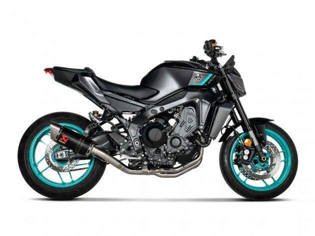

Background
With over 13 years of experience in design leadership and product design, I have countless ideas that I want to bring to life, but they require coding.
By venturing into development, I’m aiming to take my design career to the next level, allowing me to both realize my ideas and collaborate more seamlessly with developers as a designer.
Goals
I’m taking it a step further by coding my designs into existence, working with languages like:
- HTML
- CSS
- JavaScript
- Python
One day, I’d love to work as a development consultant, or maybe even build my own SaaS product.
Hobby
Motorcycles have always been more than just machines to me – they represent my biggest passion.
Riding motorcycles has always been more than just a hobby for me – it’s a deep-rooted passion that started when I was just four years old. My earliest memories are filled with the sound of engines revving and the thrill of the open road. Growing up, it wasn’t just me; my father and brother were right there with me, and together we’ve shared countless rides. Those moments spent riding alongside them, whether on quiet backroads or winding mountain paths, have created some of the best memories of my life. It’s become a family tradition, one that keeps us connected and fuels my love for motorcycles to this day.
I currently ride a MT-09 2024 Midnight Cyan, the one in the picture above.